Melhorando a visualização
Carregando as bibliotecas
Cores por continente
gap_07 <- filter(gapminder, year == 2007)
ggplot(gap_07, aes(x = gdpPercap, y = lifeExp,
color = continent)) +
geom_point()Usando formas e cores diferentes
ggplot(gap_07, aes(x = gdpPercap, y = lifeExp,
shape = continent, color = continent)) +
geom_point()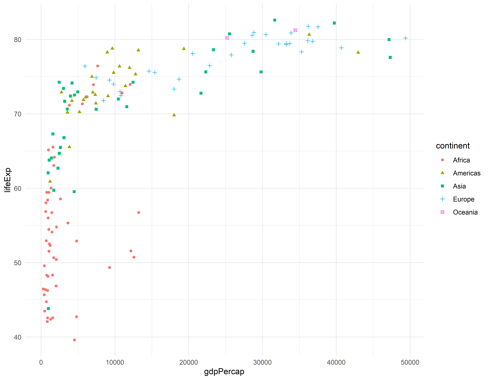
Cores e tamanho
ggplot(gap_07, aes(x = gdpPercap, y = lifeExp,
size = pop, color = continent)) +
geom_point()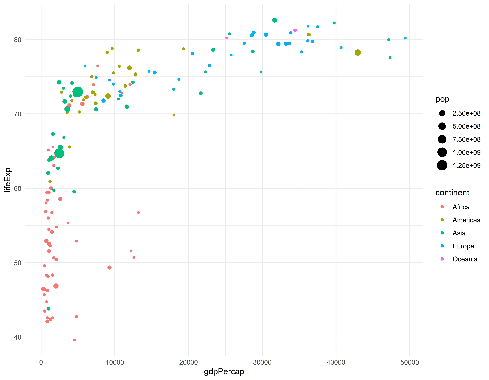
Sumario dos dados para obter pop média por continente
#> `summarise()` has grouped output by 'continent'. You can override using the
#> `.groups` argument.head(gap_pop)#> # A tibble: 6 × 3
#> # Groups: continent [1]
#> continent year pop
#> <fct> <int> <dbl>
#> 1 Africa 1952 4570010.
#> 2 Africa 1957 5093033.
#> 3 Africa 1962 5702247.
#> 4 Africa 1967 6447875.
#> 5 Africa 1972 7305376.
#> 6 Africa 1977 8328097.Grafico de linha com cores
ggplot(gap_pop, aes(x = year, y = pop, color = continent)) +
geom_line() + geom_point()Criando grids entre os anos de 2002 e 2007
gap_0207 <- gapminder %>% filter(between(year, 2002, 2007))
ggplot(gap_0207, aes(x = gdpPercap, y = lifeExp)) +
geom_point() +
facet_grid(continent ~ year)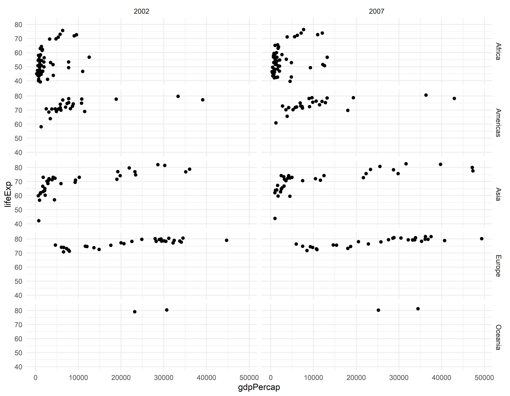
Outro tipo de apresentações de grid
Grid em outra direção
ggplot(gap_life, aes(x = year, y = lifeExp)) +
geom_line() +
facet_grid(. ~ continent)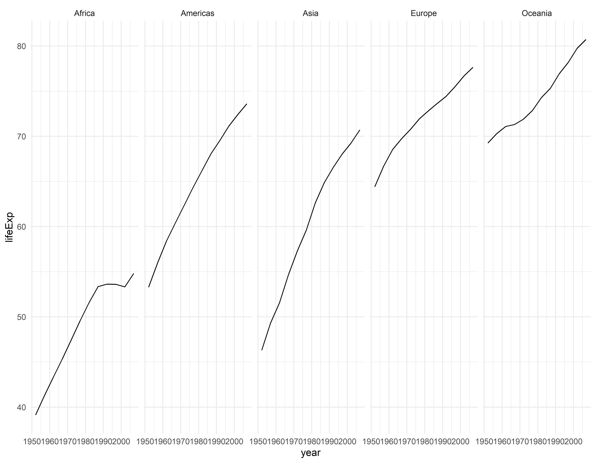
Usando o wrap
ggplot(gap_life, aes(x = year, y = lifeExp)) +
geom_line() +
facet_wrap( ~ continent)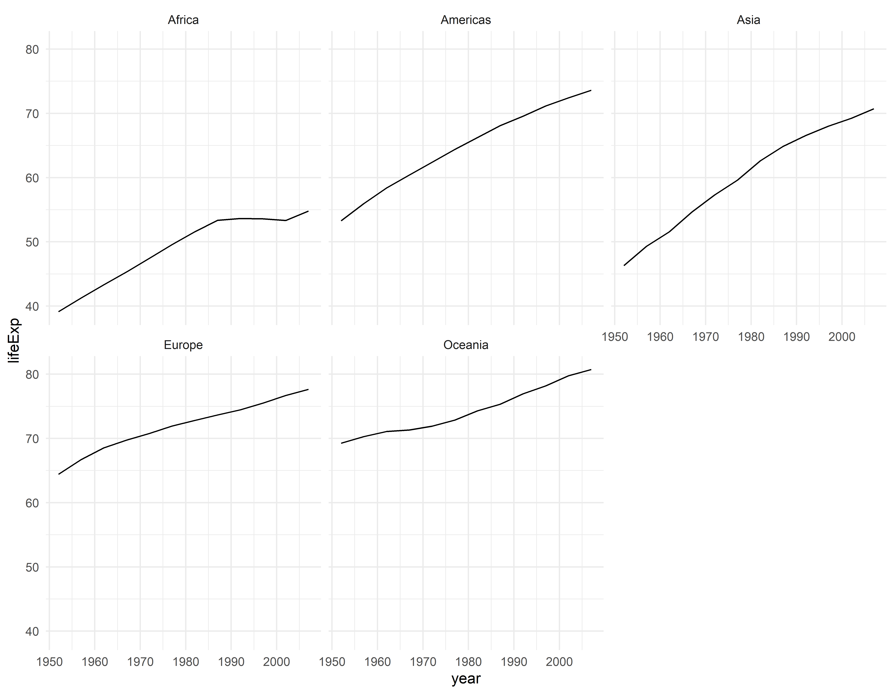
Filtrando dados e fazendo grafico de dispersão padrão
gap_07 <- filter(gapminder, year == 2007)
ggplot(gap_07, aes(x = gdpPercap, y = lifeExp)) +
geom_point()Transformando o eixo x para escala logarítimica
ggplot(gap_07, aes(x = gdpPercap, y = lifeExp)) +
geom_point() +
scale_x_continuous(trans = "log10")
Outra forma de transformação do eixo x
ggplot(gap_07, aes(x = gdpPercap, y = lifeExp)) +
geom_point() +
scale_x_log10()Definindo limites para o eixo y
ggplot(gap_07, aes(x = gdpPercap, y = lifeExp)) +
geom_point() +
scale_x_log10() +
scale_y_continuous(limits = c(0, 95))Grafico com cores normais
ggplot(gap_07, aes(x = gdpPercap, y = lifeExp, color = continent)) +
geom_point() +
scale_x_log10()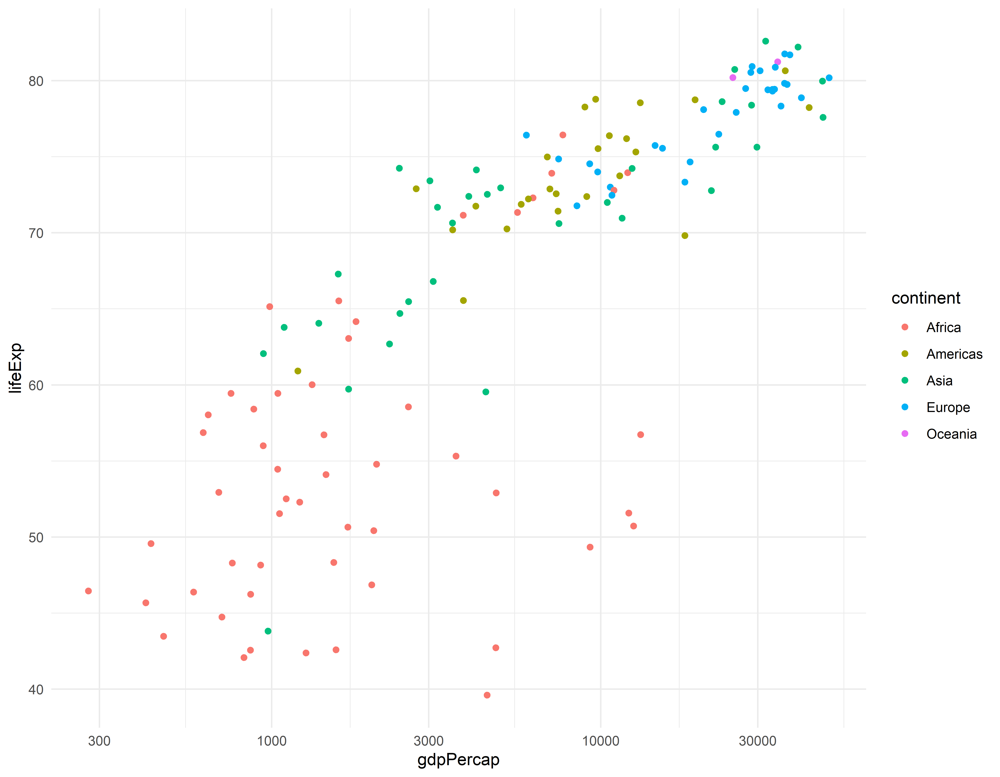
Grafico usando outra paleta de cores
ggplot(gap_07, aes(x = gdpPercap, y = lifeExp, color = continent)) +
geom_point() +
scale_x_log10() +
scale_color_brewer(palette = "Dark2")Usando codigos manuais para as cores
ggplot(gap_07, aes(x = gdpPercap, y = lifeExp, color = continent)) +
geom_point() +
scale_x_log10() +
scale_color_manual(values = c("#FF0000", "#00A08A", "#F2AD00",
"#F98400", "#5BBCD6"))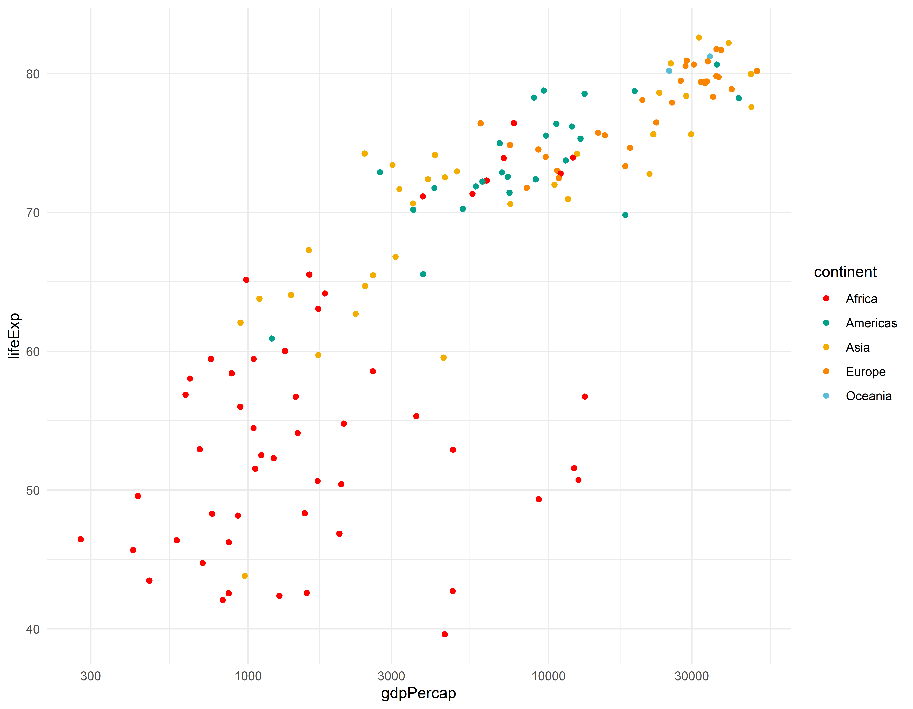
Definindo as cores e tamanho dos pontos
ggplot(gap_07, aes(x = gdpPercap, y = lifeExp)) +
geom_point(color = "darkblue", size = 3) +
scale_x_log10()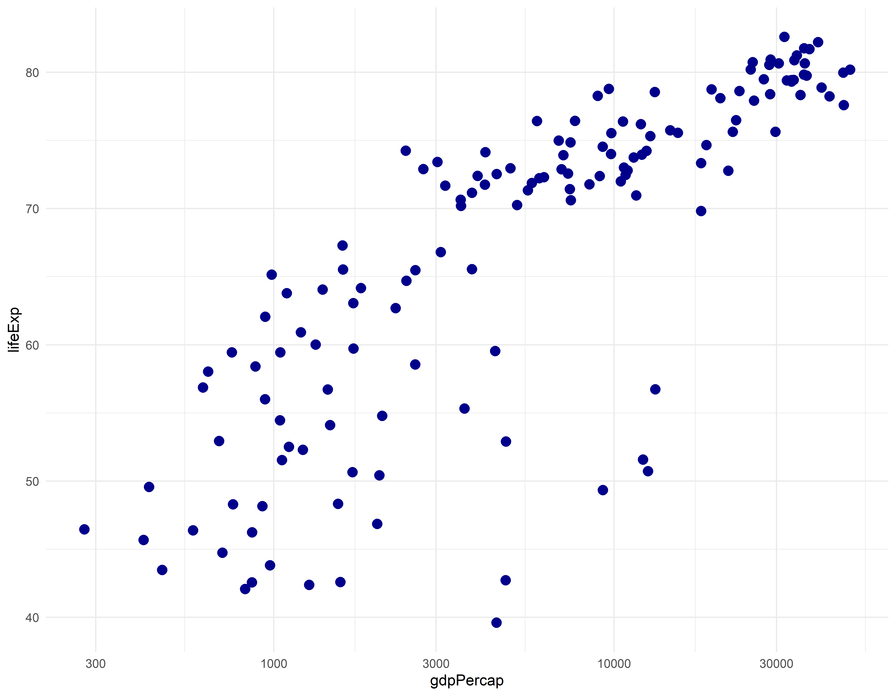
Customizando títulos, rótulos de eixo e legendas
ggplot(gap_07, aes(x = gdpPercap, y = lifeExp, color = continent)) +
geom_point(size = 2) +
scale_x_log10() +
theme_light() +
theme(legend.position = "bottom")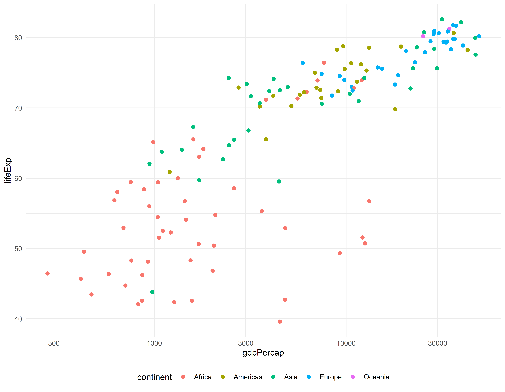
Sem legenda
ggplot(gap_07, aes(x = gdpPercap, y = lifeExp, color = continent)) +
geom_point(size = 2) +
scale_x_log10() +
theme_light() +
theme(legend.position = "none")
Legenda dentro do gráfico
ggplot(gap_07, aes(x = gdpPercap, y = lifeExp, color = continent)) +
geom_point(size = 2) +
scale_x_log10() +
theme_light() +
theme(legend.position = c(0.1, 0.85))#> Warning: A numeric `legend.position` argument in `theme()` was deprecated in ggplot2
#> 3.5.0.
#> ℹ Please use the `legend.position.inside` argument of `theme()` instead.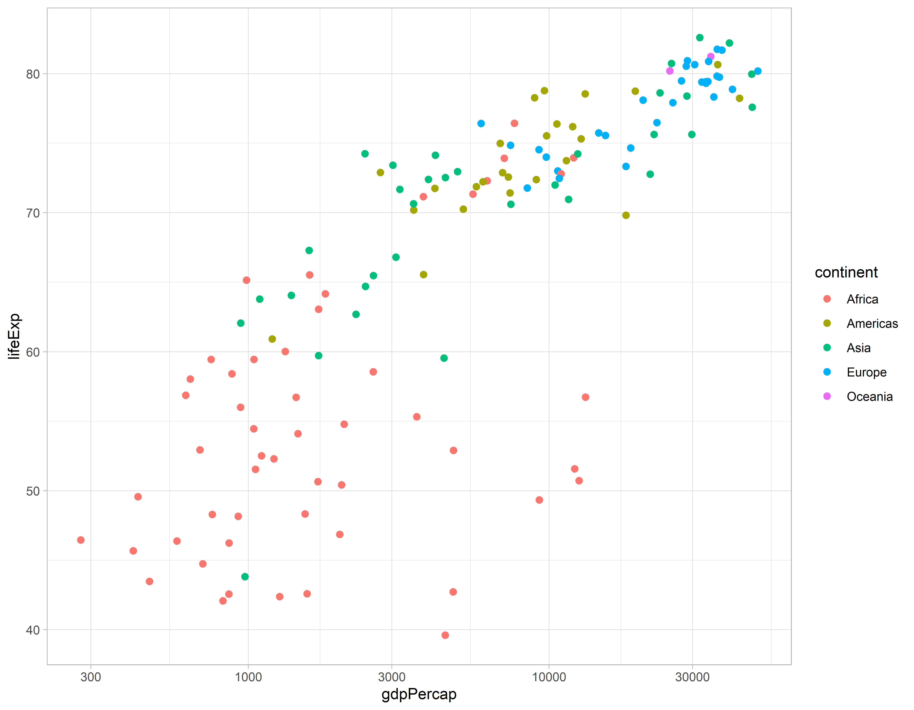
Salvando o gráfico
graf1 <- ggplot(gap_07, aes(x = gdpPercap, y = lifeExp, color = continent)) +
geom_point(size = 2) +
scale_x_log10() +
theme_light() +
theme(legend.position = c(0.1, 0.85))
graf1
Aumentando o tamanho do texto e mudando para portugues
graf2 <- ggplot(gap_07, aes(x = gdpPercap, y = lifeExp, color = continent)) +
geom_point(size = 2) +
scale_x_log10() +
theme_light() +
theme(legend.position = c(0.1, 0.80),
legend.key = element_blank(),
axis.text = element_text(size = 12),
axis.title = element_text(size = 14)) +
labs(x = "PIB Per capita (US$)",
y = "Expectativa de Vida (anos)",
title = "Expectativa de Vida vs PIB em 2007",
color = "Continente")
graf2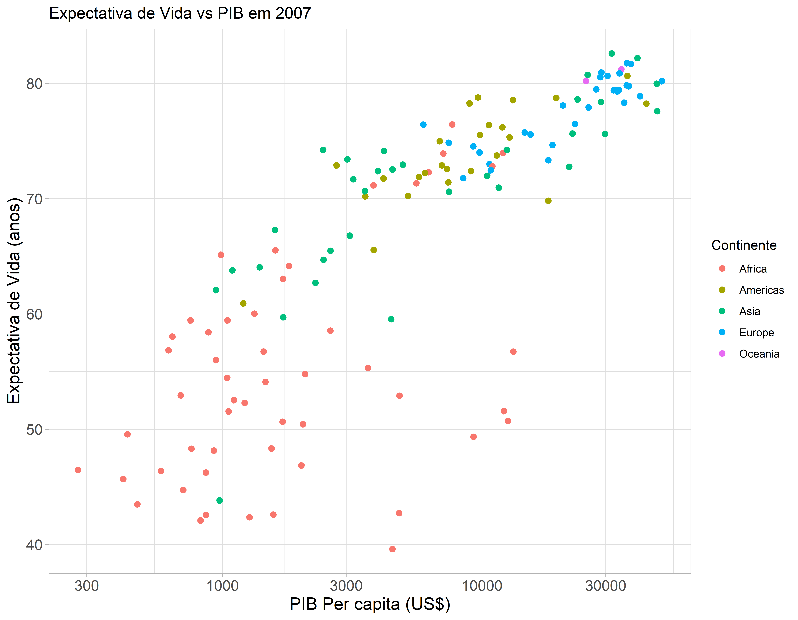